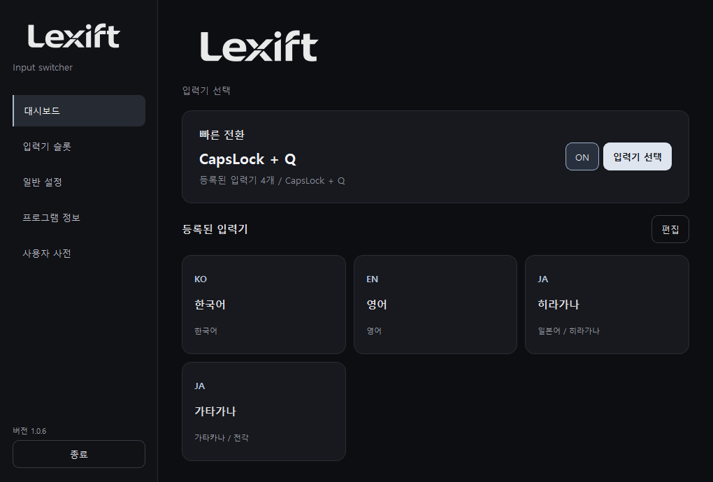

こんにちは곤니치와
발음에서 가나로, 가나에서 한자로.
Caps Lock+ALEXIFT FOR WINDOWS
익숙한 입력으로, 새로운 언어를.
단축키로 입력기를 바꾸고,
한글 발음으로 일본어와 중국어를 입력하세요.
v1.0.6 / Windows 10, 11 (64비트)
기본 단축키입니다. 설정에서 바꿀 수 있습니다.
LESS SWITCHING. MORE LEARNING.
입력기를 찾느라 마우스로 손을 옮길 필요 없이.
Caps Lock + Q를 누르고, 사용할 언어를 선택하세요.

FAMILIAR KEYS. NEW POSSIBILITIES.
일본어와 중국어 발음을 한글로 입력하면
작성 중인 칸 근처에 변환 후보가 나타납니다.
こんにちは곤니치와
발음에서 가나로, 가나에서 한자로.
Caps Lock+A你好니하오
간체부터 번체, 주음부호까지.
영문 병음 입력 후 Caps + 1~4로 성조 지정.
자주 쓰는 이름과 표현은 사용자 사전에 등록.
기능별 사용 여부와 키 조합을 설정에서 변경.
A LITTLE GUIDANCE.
설치부터 단축키, 문제 해결까지.
압축 해제 후 Lexift.exe 실행.
v1.0.6 릴리즈 정보 ↗